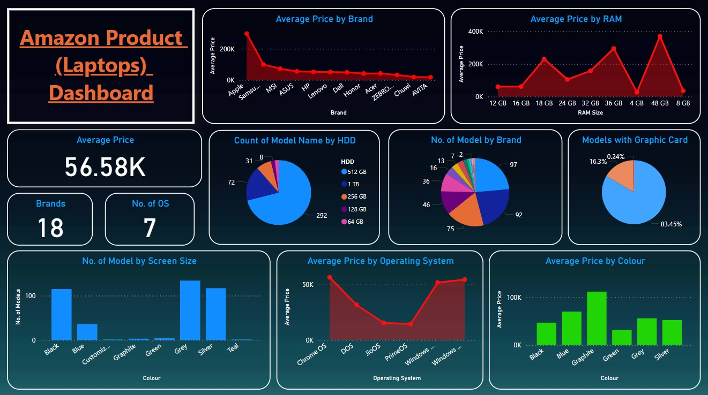

About the Project
This project involves a detailed analysis and visualization of RAM and ROM sizes using Power BI. The line chart illustrates the changes in memory sizes over time, providing insights into trends and patterns.
Project Report
Download the full report to dive deep into the project's details, including methodologies, findings, and conclusions.
Download Project Report
Power BI Dashboard Screenshots

The above screenshots display various aspects of the Power BI dashboard used in the project.
Data Extraction Process
The data for this project was meticulously gathered using web scraping techniques. Below is an overview of the process:
-
Web Scraping with Selenium and BeautifulSoup:
- Used Selenium to automate the browsing and extraction of HTML content from Amazon product pages (laptops).
- Saved the HTML content of each page locally for further processing.
-
Data Parsing and Cleaning:
- Employed BeautifulSoup to parse the HTML and extract specific details such as laptop brand, model, screen size, and price.
- Compiled the extracted data into a structured format and saved it as a CSV file using Pandas.
-
Data Cleaning:
- Used Microsoft Excel to clean and refine the dataset, ensuring the data was ready for analysis and visualization.
Skills Demonstrated
This project showcases a broad range of skills, including:
- Web Scraping: Automating data extraction from websites using Selenium and BeautifulSoup.
- Data Cleaning: Ensuring data integrity and accuracy through thorough cleaning processes in MS Excel.
- Data Analysis: Utilizing Pandas for data manipulation and Power BI for insightful data visualization.
- Python Programming: Writing efficient scripts for web scraping, data parsing, and file handling.
- Project Management: Successfully managing and executing the project from data extraction to final visualization.